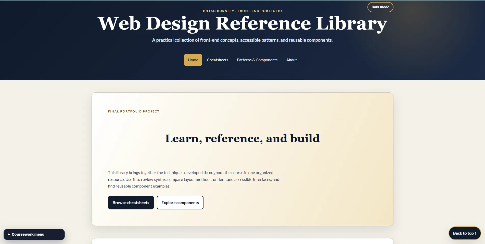
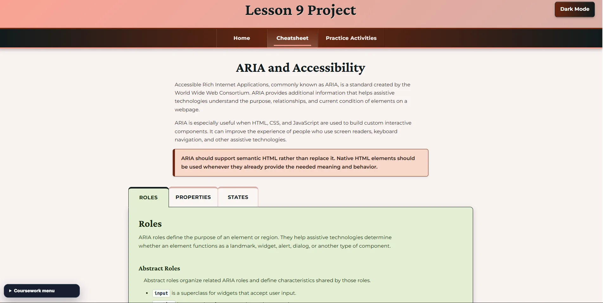
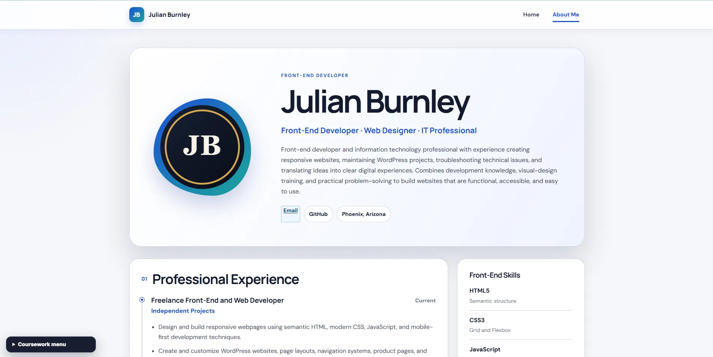
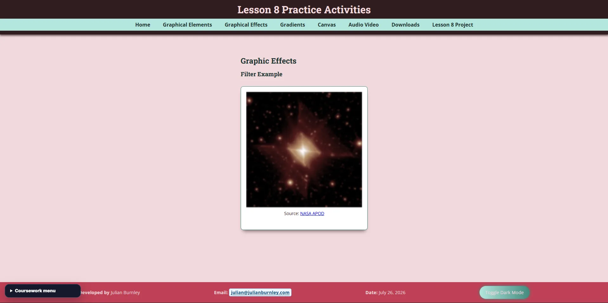
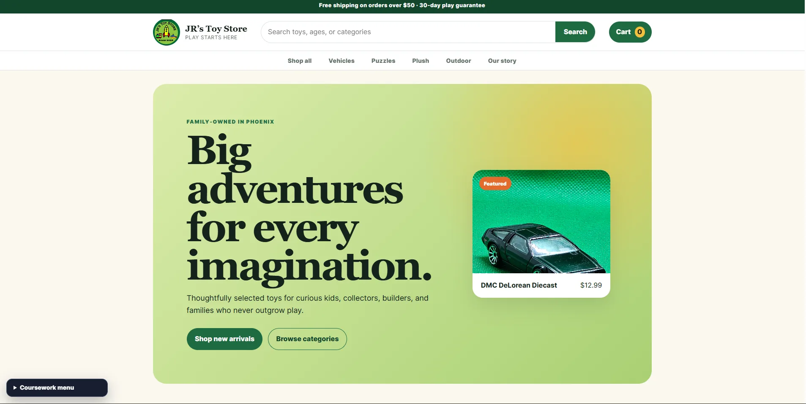
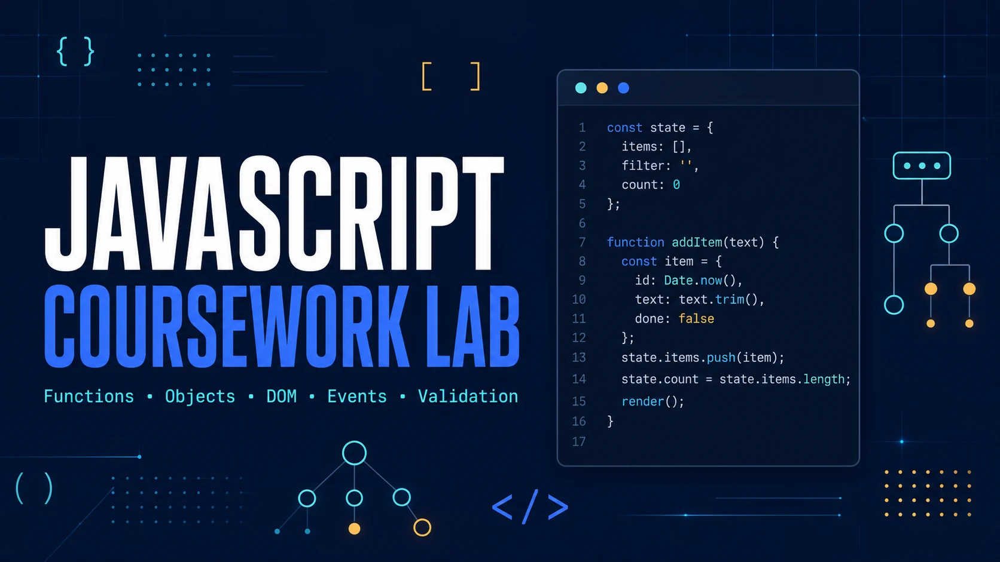

01
Front-End Developer · IT Professional · AI Practitioner
I build useful digital experiences grounded in real-world support.
I combine front-end development with years of technical support and network operations experience to create accessible websites and practical digital products that are clear, reliable, and easy to maintain.
- Based in Arizona
- Available for front-end and web development opportunities
- julian@julianburnley.com
About
Technical range with a front-end focus.
I am a front-end developer and information technology professional with experience in web development, Tier 2 support, network operations, device troubleshooting, and visual design. My current focus is creating polished front-end experiences with semantic HTML, modern CSS, and JavaScript.
At AT&T and 2Wire, I diagnosed connectivity, gateway, VoIP, IPTV, and customer-device issues under pressure. That background shapes how I work today: understand the problem, document decisions, test carefully, and communicate clearly.
Capabilities
Skills and tools
A practical combination of development, design, AI-assisted work, and technical support.
02
Platforms & Tools
03
Design
04
AI & IT
Selected work
Projects
Independent products lead this collection, followed by selected coursework documenting the foundations behind my current work.
Independent product · First-version concept
Casa Grande Local
A directory-first community guide designed to help residents and visitors find independent businesses, useful services, events, and trusted local information without digging through national platforms or social feeds.
Independent climate communication project
Climate, Close to Home
An evidence-based visual story and automated briefing connecting global climate change to Southwestern water, extreme weather, living systems, and practical action.
Explore the live projectOutcomeA distinctive, continuously updated public-interest project demonstrating research, editorial judgment, visual communication, and responsible automation.
Supporting collection
CIS235 Coursework Library
Explore my completed coursework from Lessons 1–12. The collection follows my progression from planning and information architecture through selectors, responsive layout, Grid, interface design, animation, media, accessibility, and a final reference system.
Explore all coursework
Featured project
Web Design Reference Library
A responsive multi-page knowledge system covering semantic HTML, modern CSS, ARIA, digital media, and reusable interface patterns.
View case study
Inclusive component design
Accessible ARIA Interface
An educational interface with keyboard-operable tabs, correct ARIA state management, skip navigation, and responsive content tables.
View case study
Personal brand experience
Professional Web Résumé
A polished résumé and reflection experience combining responsive layout, social metadata, professional writing, and portfolio branding.
View case study
Rich media exploration
Interactive Media Lab
Responsive images, filters, gradients, canvas drawing, audio, video, captions, and downloadable media examples in one cohesive interface.
View case study
Responsive storefront redesign
JR’s Toy Store
A family-friendly product storefront with category browsing, responsive product cards, dark mode, and interactive cart feedback.
View live project
Interactive coursework collection
JavaScript Coursework Lab
Eight modernized exercises tracing my progression through functions, objects, arrays, conditionals, DOM APIs, events, validation, and browser APIs.
Run the exercisesNext development phase
Casa Grande Local is moving toward WordPress and HivePress.
The product concept, audience, categories, search interaction, trust principles, and launch sequence are now defined. The next phase connects this direction to a maintainable directory platform.
AI workflow
AI practitioner, not just an AI user.
I use generative AI as a structured part of my technical workflow while verifying results, testing code, and making final design and implementation decisions myself.
Research and planning
Compare approaches, clarify requirements, and turn ideas into actionable project plans.
Development support
Generate starting points, debug problems, explain unfamiliar code, and improve implementation choices.
Design and content
Refine layouts, develop content structure, test messaging, and improve usability.
Quality control
Review outputs critically, confirm facts, test functionality, and revise work before publication.
Résumé
Professional experience and education
My background combines front-end development with professional Tier 2 support, network operations, customer communication, and hands-on systems troubleshooting.
Download résumé (PDF)2012–Present · Self-employed
IT Professional and Web Developer
Provide ongoing web development and technical support, diagnose Windows, Linux, software, networking, and peripheral issues, maintain home-lab services, and document durable solutions.
2008–2011 · AT&T
Tier 2 Support, Network Operations Center
Handled 20+ daily support calls for VoIP, IPTV, and Internet services while maintaining a 95% first-contact resolution rate and detailed escalation documentation.
2003–2008 · 2Wire
DSL Support Technician, Levels 1 and 2
Configured residential gateways, analyzed line quality, resolved wireless and broadband connectivity issues, and supported hardware and email setup.
Education
Bachelor of Applied Science in Information Technology
Phoenix College, Maricopa County Community College District · 2026
Education
Associate of Applied Science — Web Development / Design
Rio Salado College, Maricopa County Community College District · 2024
Education
Associate of Applied Science — Programming and System Analysis
Rio Salado College, Maricopa County Community College District · 2022
Certificates
Technical credentials
- Computer System Configuration and Support — Network, Security, and Linux · Phoenix College · 2026
- Computer System Configuration and Support · Phoenix College · 2026
- Microsoft Desktop Associate · Phoenix College · 2026
- Web App Development · Rio Salado College · 2022
Contact
Let’s build something useful.
I am interested in front-end development, web development, AI-enabled application work, and technical roles where design and problem-solving matter.